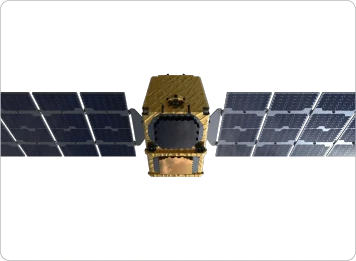
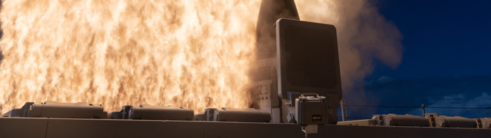
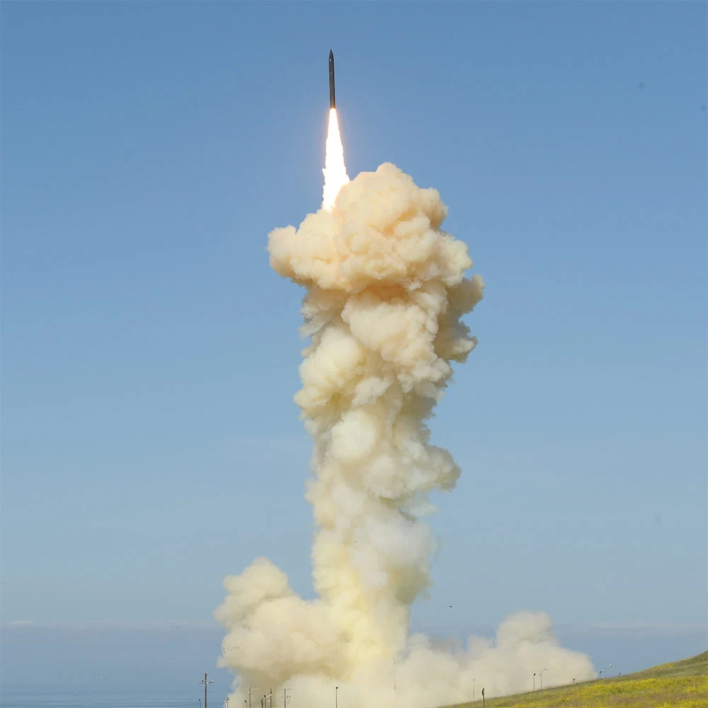
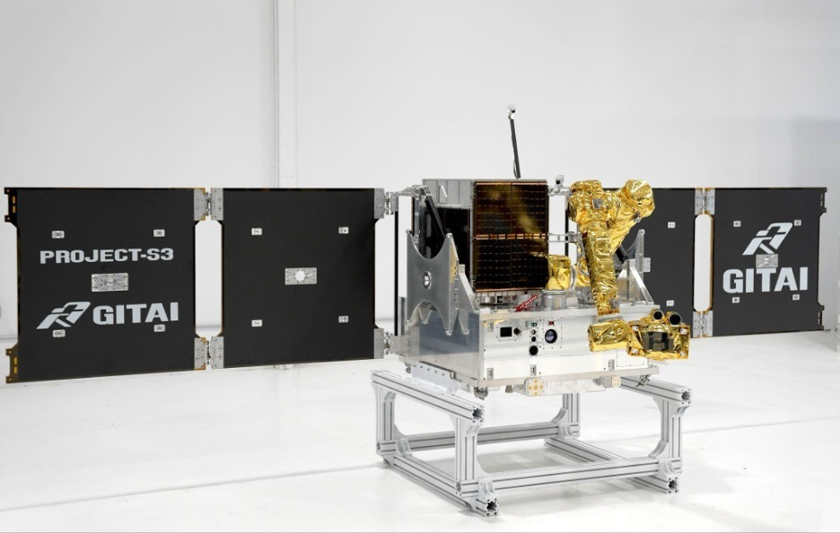

美国 Golden Dome（金穹）$1850 亿国防航天产业投资地图
$185B（1,850 亿美元）不是 Golden Dome 的“生命周期总预算上限”，而是 Pentagon（五角大楼）当前披露的 objective architecture（目标架构）规划口径之一。真正理解这项计划，需要把年度拨款、十年架构估算、采购工具上限与 CBO（二十年生命周期假想成本）分开，再沿 Detect（发现）—Track（跟踪）—Transport（传输）—Decide（决策）—Intercept（拦截）的完整杀伤链寻找价值池。
不是生命周期硬上限
这组研究，起点是一则看似并不宏大的新闻：美国太空军披露，参与 Golden Dome（金穹）SBI（Space-Based Interceptor，天基拦截器）竞赛的 12 家供应商全部通过 Gate 1（第一阶段：设计与组件级测试）。“第一关全员通过”本身不足以改变任何一家公司的盈利模型，却第一次把一批传统军工、新型 Defense Tech（国防科技）和商业航天公司放进了同一场国家级工程淘汰赛。
由此，这个专题被拆成上下两篇。《SpaceX vs Rocket Lab：美国国防航天与运载体系的两条路线》从公司出发，研究两个 New Space Prime（新航天主承包商）的垂直整合；本篇从系统出发，回答 Golden Dome 到底要解决什么、钱有几种口径、12 家 SBI 入选公司分别是谁、哪些合同已经落地，以及这些公司股票在 2026 年走到了哪里。
Golden Dome 不是一件武器，而是一套覆盖美国本土的“系统之系统”
2025 年 1 月的行政令要求美国建立下一代本土导弹防御盾，目标从过去主要防范有限弹道导弹攻击，扩展到 peer / near-peer adversaries（同级与近同级对手）拥有的弹道、高超声速、先进巡航导弹和其他下一代空中威胁。行政令明确要求发展 HBTSS（Hypersonic and Ballistic Tracking Space Sensor，高超声速与弹道跟踪太空传感器）、proliferated space-based interceptors（大规模分布式天基拦截器）、PWSA（Proliferated Warfighter Space Architecture，分布式作战员太空架构）、left-of-launch defeat（发射前压制/摧毁）和 non-kinetic（非动能）能力。
系统目标越广，预算越不能只看一个数字。$185B 是最常被引用的口径，但它与年度拨款、采购合同工具和生命周期成本不是同一个概念。
不止 $185B：五个数字分别回答五个不同问题，不能相加
为什么 CBO 会算到 $1.2T？
CBO 明确表示，DoD 没有公开足够细的 objective architecture 数量和系统构成，因此无法对 Pentagon 的真实长期方案做精确成本估算。CBO 为此建立了一套示范性架构，其中最昂贵的是 SBI 天基拦截层：约 7,800 颗拦截卫星，并假设需要持续更新和运营。其天基拦截层约占 acquisition cost（采购成本）的 70%、总成本的约 60%。这说明一个核心投资问题：Golden Dome 的真正总成本，最终取决于天基拦截器到底部署多少、单颗多贵、寿命多长以及补网频率。
预算差异的根源其实就是架构差异。理解钱会花到哪里，必须先看 Golden Dome 的杀伤链如何工作。
从“看见”到“打掉”：六步杀伤链决定六类产业价值池
这条链也解释了为什么 Gate 1 的 12 家公司名单如此“杂”：它既有百年军工巨头，也有做卫星运营软件、机器人和 RPO（交会与近距操作）的创业公司。
Gate 1 全员通过意味着“第一轮工程筛选没有淘汰者”，不意味着 12 家都拿到量产
Space Force 的 SBI（天基拦截器）路线希望在 pLEO（proliferated Low Earth Orbit，大规模分布式近地轨道）预先部署拦截器，使其能够尝试在 boost（助推段）、midcourse（中段）或 glide（高超声速滑翔段）更早介入。2025 年末至 2026 年初，Space Systems Command（太空系统司令部）通过 20 个 OTA 向 12 家企业建立并行竞争，总潜在上限约 $3.2B。
因此，真正有用的下一步不是把 12 家公司都叫“赢家”，而是逐一看它们被选进来是因为哪种能力。
12 家入选公司逐一看：传统军工、新航天与软件运营能力被放进同一场竞赛
SpaceX
核心：发射 + 卫星工厂 + Starshield（星盾，国家安全卫星/安全通信体系）+ 光学星间链路。SBI 若走向大规模低轨部署，SpaceX 的优势不是单一“杀伤器”，而是能同时提供 spacecraft（航天器）、network（网络）、launch（发射）与运营。
Anduril Industries
核心：Lattice（格栅，AI 自主作战/指挥控制软件）+ 自主硬件 + 快速迭代。Anduril 已宣布领导一个 SBI 团队，伙伴包括 Impulse Space、Inversion Space、K2 Space、Sandia National Laboratories 与 Voyager Technologies，重点是 affordable & scalable（低成本、可规模化）。
Booz Allen Hamilton
核心：数字工程、AI、系统工程、任务软件与政府体系集成。BAH 不是典型导弹制造商，其入选说明 SBI 不只是硬件问题，还需要模型仿真、数字工程和复杂系统集成能力。
General Dynamics Mission Systems
核心：安全通信、任务系统、指挥控制与复杂军用系统集成。GD 在这张地图里的价值更偏“把不同武器和网络可靠地接起来”，而非成为最显眼的太空平台供应商。
GITAI USA
核心：卫星平台 + 太空机器人 + 自主交会/对接。GITAI 称其 SBI 执行采用高度垂直整合模式，内部覆盖 spacecraft（航天器）、avionics（航电）、software（软件）、robotics（机器人）、solid rocket motors（固体火箭发动机）和 mission systems（任务系统）。
Lockheed Martin
核心：NGI（Next Generation Interceptor，下一代陆基中段拦截器）、PAC-3（爱国者先进能力-3）、C2BMC（指挥控制/战斗管理/通信）、雷达与太空系统。无论 SBI 最终占比高低，LMT 都有多层防御产品可以承接预算。
Northrop Grumman
核心：GMD（Ground-based Midcourse Defense，陆基中段防御）系统、GBI（Ground-Based Interceptor，陆基拦截器）助推系统、系统集成与国家安全太空。它的优势是能把成熟的导弹防御工程经验迁移到新的天基架构。
Quindar
核心：cloud-native（云原生）卫星运营、地面系统、C2 与 constellation operations（星座运营）。Quindar 的入选非常能说明 SBI 的本质：数百/数千个在轨节点如果不能自动化运营，硬件成本再低也无法形成可用体系。
Raytheon / RTX
核心：SM-3（标准-3，大气层外弹道导弹拦截器）、SM-6（标准-6，多任务防空/反导导弹）、雷达、导引与 hit-to-kill（直接碰撞杀伤）技术。Raytheon 的 SBI 团队还引入 Rocket Lab（RKLB）作为卫星/发射合作方。
SciTec / Firefly Aerospace
核心：先进传感器数据处理、导弹预警/跟踪算法和任务软件。SciTec 已进入 Firefly Aerospace（FLY）体系，因此投资者可以通过 FLY 间接观察这部分 Golden Dome/SBI 暴露。
True Anomaly
核心：Jackal（豺狼，高机动轨道航天器）、Mosaic（马赛克，太空作战/态势软件）、RPO 与 autonomy（自主性）。VICTUS HAZE 已展示其高机动航天器在快速响应任务中的追踪/机动能力。
Turion Space
核心：DROID（高机动战术卫星平台）、Starfire（星火，任务/星座软件）、RPO 与空间物流。其路线是把 space domain awareness（太空域感知）、高机动航天器和任务软件结合起来。
公司名单告诉我们谁在“竞赛桌上”；产品图则更直观地展示，Golden Dome 的硬件并不是一种东西，而是从卫星平台到拦截器的完全不同资产。
从太空平台到陆海基拦截器：四张产品图把系统层级具象化

代表“太空平台层”：军用跟踪/传输星座需要可批量生产的卫星 bus（卫星平台）与低延迟互联。来源：Rocket Lab 官方。

代表“成熟陆海基拦截层”：SM-3 采用 hit-to-kill（动能直接碰撞）方式摧毁短程至中程弹道导弹。来源：RTX 官方。

代表“本土中段防御层”：GBI 是现有 GMD 体系的重要组成，说明 Golden Dome 不是抛弃传统拦截，而是在其上继续叠加太空能力。产品说明来源：Northrop Grumman；图片优先采用其官方媒体源，下载失败时回退至美国国防部/MDA 同型号 GBI 实弹测试图。

代表“新型高机动/自主航天器层”：GITAI 用共同卫星平台、机器人、自主 RPO 与垂直整合制造切入 SBI。来源：GITAI 官方。
把产品放回杀伤链后，下一步就可以更严谨地看：哪些钱已经以合同形式真正流出来，哪些仍只是潜在价值池。
已落地合同显示：钱正在先流向“眼睛、神经网络与可扩展星座”
| 项目 | 公开金额 | 承包商 | 中文说明 | 投资含义 |
|---|---|---|---|---|
| AMDT3 | $1.75B | L3Harris $955M；Sierra Space $798M | Accelerated Missile Defense Tranche 3（加速导弹防御第三批次）：共 36 颗导弹跟踪/防御卫星 | 太空感知已进入十亿美元级批量采购。 |
| TRKT3 | $816M | Rocket Lab | Tracking Layer Tranche 3（跟踪层第三批次）：18 颗导弹预警/跟踪卫星 | RKLB 已成为军用星座 Prime。 |
| SB-AMTI | $4.16B | SpaceX | Space-Based Airborne Moving Target Indicator（天基空中移动目标指示） | SpaceX 从“发射商”进入持续战场感知基础设施。 |
| SDN Backbone | $2.29B | SpaceX | Space Data Network Backbone（太空数据网络骨干） | 卡住 sensor-to-shooter（传感器到武器）的低延迟数据链。 |
| SBI prototype OTAs | 潜在合计上限约 $3.2B | 12 家竞争者 | 天基拦截器原型、设计与逐级验证 | Gate 1 仍属研发/原型阶段；量产价值远未落定。 |
投资模型仍以 $185B 做十年基准，但先按功能拆，再映射公司
| 功能层 | Kerwin/Enya Base Case | 占比 | 主要参与者 | 核心逻辑 |
|---|---|---|---|---|
| Space sensing / tracking（太空感知与跟踪） | $28B | 15% | SpaceX、LHX、RKLB、Sierra、LMT、NOC | 没有火控级轨迹，后面的拦截器无法闭环。 |
| Space Data Network（太空数据网络） | $14B | 8% | SpaceX、LHX、RKLB、Aalyria 等 | 把 sensor（传感器）与 shooter（拦截器）连成低延迟网络。 |
| C2 + AI（指挥控制与人工智能） | $12B | 6% | PLTR、Anduril、LMT、NOC、BAH | 融合数据、威胁排序、资源分配与交战决策。 |
| SBI（天基拦截器） | $40B | 22% | SpaceX、LMT、RTX、NOC、Anduril 等 | 最具颠覆性，也最受经济性约束的新增层。 |
| Ground/Sea interceptor + radar（陆海基拦截与雷达） | $55B | 30% | LMT、RTX、NOC、GD | 成熟体系、库存和工业产能决定近期可交付能力。 |
| Launch / Space access（发射/太空接入） | $10B | 5% | SpaceX、RKLB、ULA 等 | 建设星座、测试与战时 reconstitution（补网）不可缺失。 |
| Test / integration / sustainment（测试、集成、维护） | $26B | 14% | 传统军工、新型 Defense Tech、政府设施与供应链 | 复杂系统进入作战状态后的长期成本。 |
如果把 $185B 映射到公司，最重要的是区分“绝对金额”与“对股票的边际影响”
| 公司/群体 | Base Case 非重叠价值池 | 主要层级 | 股票意义 |
|---|---|---|---|
| LMT | ~$31B | NGI、PAC-3、雷达、C2、SBI | 绝对金额大；架构变化下最稳健。 |
| SpaceX | ~$27B | 卫星、网络、SBI、发射、运营 | 战略位置最完整，可能获得跨层协同价值。 |
| RTX | ~$27B | SM-3/SM-6、雷达、杀伤器、SBI | 若 SBI 失败，传统拦截预算回流反而更有利。 |
| NOC | ~$23B | GMD、系统集成、太空与 SBI | 广覆盖、较低单一路线风险。 |
| LHX | ~$12B | HBTSS、Tracking Layer | 高纯度传感器/跟踪层受益。 |
| RKLB | ~$10B | 跟踪/传输卫星、SBI 团队、HASTE、快速发射 | 小收入基数带来更高经营杠杆。 |
| Anduril | ~$9B | AI/C2 + SBI | 新型 Defense Tech 的高弹性。 |
| PLTR | ~$6B | AI/C2 / 数据融合 | 合同额不必最大，软件利润率和持续性可能更高。 |
| Sierra Space | ~$5B | 跟踪卫星 | 军用卫星 Prime 身份对私营公司价值重构明显。 |
| 其他 | ~$35B | GD、BAH、FLY/SciTec、Quindar、GITAI、True Anomaly、Turion、零部件等 | 高度分散，后续 Gate 与生产合同会重新集中。 |
禁止误读
上表不是 Pentagon 公司预算，也不是未来 GAAP（美国通用会计准则）收入预测。真实项目存在 Prime → subcontractor（主承包商→分包商）层层流转，同一合同价值可能在供应链上重复出现；这里使用“非重叠经济价值池”只为比较产业位置。
2026 年股价没有简单按照 Golden Dome 暴露度排序
以下为 2025-12-31 收盘至 2026-08-14 收盘的价格回报，不计股息。SpaceX（SPCX）于 2026 年 6 月才上市，因此单列 IPO（首次公开募股）以来，不伪造完整 YTD。
市场已经给不同公司完全不同的估值结果，而下一阶段最能改变公司排序的，不是新闻数量，而是 SBI 的经济性能否成立。
整个主题最大的分叉：天基拦截器能不能从“物理可行”变成“经济可行”
| 价值池 | SBI 成功 | Base Case | SBI 经济性失败 |
|---|---|---|---|
| 太空感知 | $28B | $28B | $30B |
| 太空网络 | $14B | $14B | $14B |
| AI/C2 | $12B | $12B | $15B |
| SBI | $55B | $40B | $15B |
| 陆海基防御 | $42B | $55B | $80B |
| 发射 | $12B | $10B | $6B |
| 测试/集成/维护 | $22B | $26B | $25B |
| 合计 | $185B | $185B | $185B |
SBI 成功：SpaceX、Anduril、LMT、NOC、RTX，以及通过 RTX 团队参与的 RKLB，太空硬件 optionality（期权价值）上升。
SBI 经济性失败：钱未必消失，而可能更多回到成熟陆海基拦截器、雷达与火控系统，RTX / LMT / NOC 相对占优。
下一步只跟踪能改变产业地图的事件
五个证伪条件
① SBI Gate 2/3 延期或失败：天基拦截价值池显著下修。
② 国会实际 appropriations（拨款）长期明显低于架构规划：$185B 目标与现实采购产生持续缺口。
③ 传感/网络无法达到火控级精度和延迟：sensor-to-shooter 闭环难以成立。
④ 新商业 Prime 的固定价合同出现大规模成本失控：小型航天公司收入增长可能伴随现金流恶化。
⑤ 软件层无法形成统一接口：PLTR / Anduril / Quindar 等 control-plane（控制平面）价值被多套军种系统分散。
主要来源与网站内相关专题
EnyaClawd
Kerwin 负责选题、投资逻辑与最终审阅；Enya 负责证据整理、数据核验、可视化呈现与后续维护。